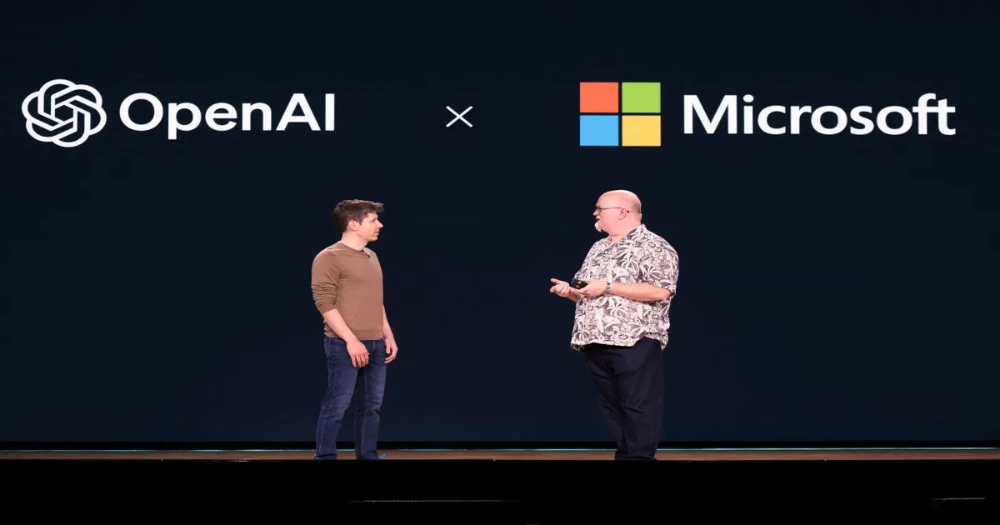

Microsoft зафиксировала $ 10 млрд выручки от OpenAI
Microsoft заявила, что получила $ 10 млрд дохода от коммерческих соглашений с OpenAI, включая платежи по распределению доходов, в квартале, закончившемся 30 сентября.
Это подчеркивает все еще огромную финансовую зависимость партнерства.